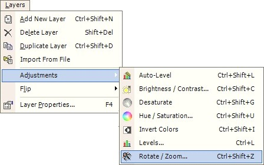
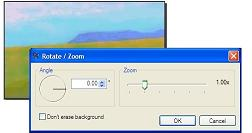
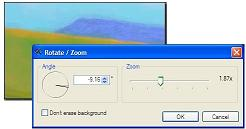

Rotate / Zoom Adjustment
 The Rotate / Zoom adjustment can be used to rotate the image and zoom in / out the image at the same time. The Rotate / Zoom effect adjustment uses either the center of the selection or the center of the canvas as the rotation and zooming anchor. If the Rotate / Zoom effect is used with multiple selections, the center point is calculated from the aggregate outer boundary. |
|
 The picture to the right was painted with an angled horizon. The Rotate / Zoom adjustment is shown with its default settings. |
|
 |